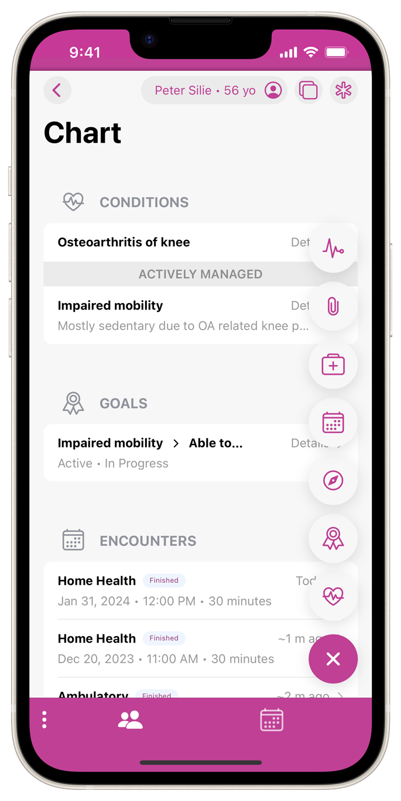
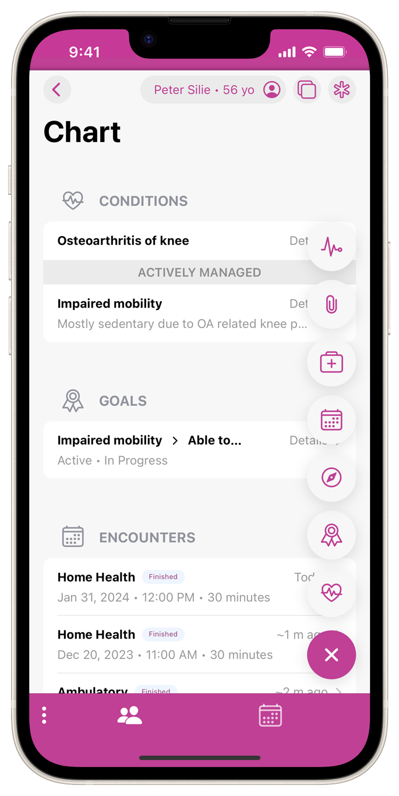

Intuitive, mobile-first design
Lux Health is built around Apple's Human Interface Guidelines and Google's Material Design, making for a familiar and accessible user interface.
The app is based on a mobile-first principle, allowing the user to engage with all clinical data on their smartphones. This prioritizes accessibility and flexibility, while decreasing the negative impact technology can have on the patient-provider relationship.
 
